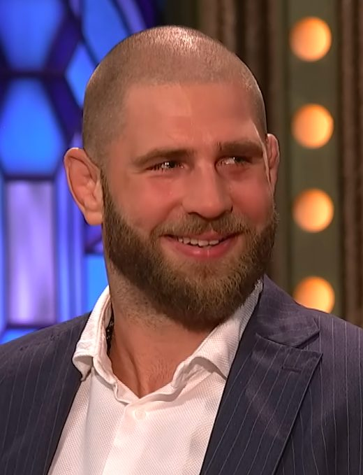

纳瓦霍·斯特林KO终结普罗哈兹卡，UFC卡塔尔站迎来生涯里程碑之夜
新西兰不败轻重量级新星在第二回合仅剩两秒时终结前冠军，将职业战绩改写为12战全胜。

事件回顾
2026年11月21日星期六，纳瓦霍·斯特林（Navajo Stirling）在UFC卡塔尔格斗之夜的头条主赛中带来震撼表现，强势KO前轻重量级冠军伊日·普罗哈兹卡（Jiří Procházka）。在前两个回合中，这位29岁的新西兰悍将通过精准的腿法牢牢掌控距离，并在第二回合比赛仅剩两秒时，轰出一记决定性的右勾拳击倒对手。普罗哈兹卡在倒地时计时器定格在4分58秒，当值裁判马克·戈达德（Marc Goddard）在斯特林跟进几记地面砸拳后迅速叫停了比赛。这场失利让捷克老将吞下两连败，而普罗哈兹卡赛后也坦言斯特林当晚确实是“表现更好的那一方”。

焦点解读
斯特林这记利落的终结，为他极具爆发力的2026年画上了一个惊艳的句号，也让他直接进入了UFC年度最佳拳手的讨论范畴。继今年8月击败前级别霸主扬·布拉霍维奇（Jan Błachowicz）之后，斯特林又在几乎没有遭受实质性打击的情况下，轻取另一位前世界冠军。转入职业MMA领域仅仅四年，这位常驻奥克兰的站立打击手便已强势杀入205磅的精英梯队。然而，他的飞速蹿升也给UFC出了一道棘手的对阵难题：现任轻重量级冠军卡洛斯·阿尔伯格（Carlos Ulberg）不仅是他的同门队友，更是他在新西兰城市踢拳馆（City Kickboxing）的挚友。
关键数据
- 12胜0负： 斯特林在职业综合格斗赛场上保持的完美不败战绩。
- 4： 斯特林在2026自然年内斩获的连续KO终结胜场数。
- 4分58秒： 第二回合中，裁判马克·戈达德挥手终止比赛的官方时间。
- 100,000美元： 斯特林凭借这场头条主赛的惊艳终结所拿到的“最佳表现”花红奖金。
后续看点
受限于拳馆兄弟情谊，斯特林的直接争冠之路变得颇为复杂。阿尔伯格在2026年4月拉下普罗哈兹卡登顶金腰带，但在该场对决中遭遇前交叉韧带撕裂，目前仍在康复期，此后尚未出战。同门队友之间极少同意自相残杀，斯特林在八角笼内也刻意回避了向阿尔伯格叫阵，他表示：“我现在还不太确定，我们会想出解决办法的，先看看排在我前面的还有谁。”UFC对阵策划团队如今必须做出抉择：是安排斯特林面对另一位高排位竞争者，还是趁阿尔伯格全力康复之际，为斯特林铺设一场临时冠军争夺战。